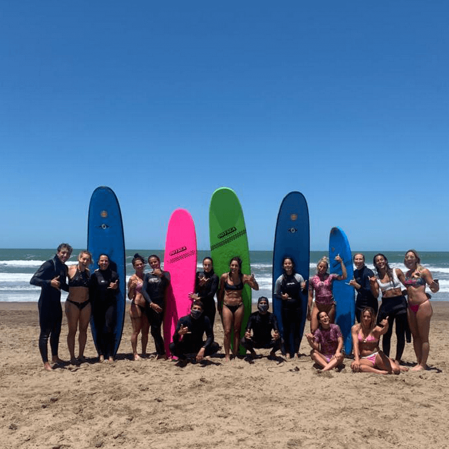
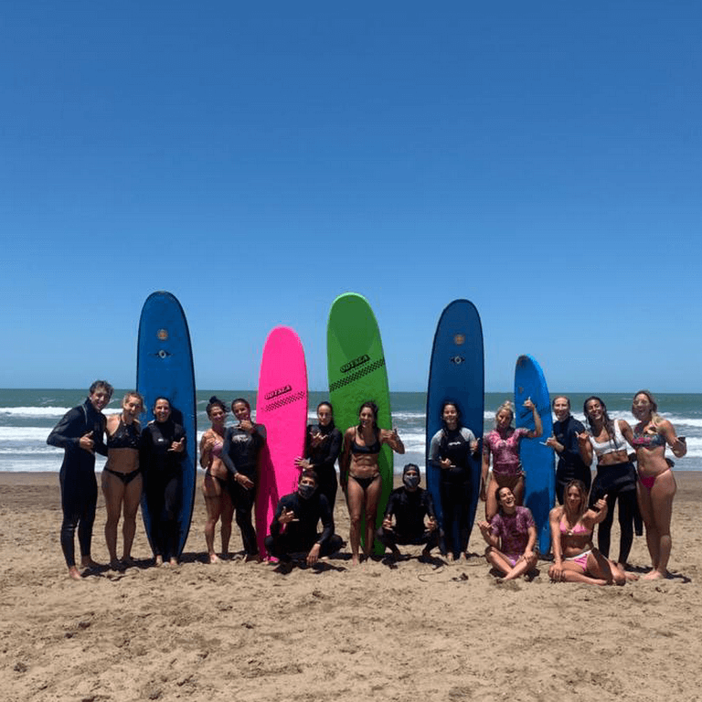
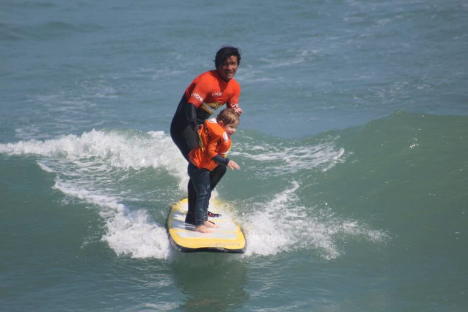

Coaching e Introduccion al Surf
North Shore (Argentina)
En la localidad de Villa Gesell, Costa Atlántica. Ubicada al norte de la ciudad balnearia podemos encontrarnos con la escuela de Surf y Bodyboard North Shore. Atendida por sus dueños, esta escuela con apenas 2 años de trayectoria cumple con los estándares de seguridad y pericia para dar los pasos iniciales y convertirse en un rider capaz de Surfear en cualquier condición de forma autónoma. La podes encontrar en Calle 307 y Playa.

Escola De Surf Capitao David (Brasil)
Ubicada en una de las playas mas hermosas de Brasil, mas precisamente en Praia Do Rosa, se encuentra Capitan David. Fundada en 1994 cuenta con el testimonio de mas de 10.000 alumnos de todas partes del mundo.

 

Pukana (Perú)
Ademas de la antigua ciudad Inca de Machu Picchu, el basto territorio Peruano también tiene una de las culturas del surf mas grandes del mundo. Y por supuesto cuenta con una de las mejores escuelas de surf del territorio, mas precisamente en Lima la capital Peruana.
